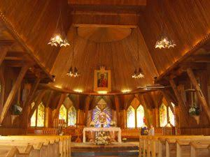
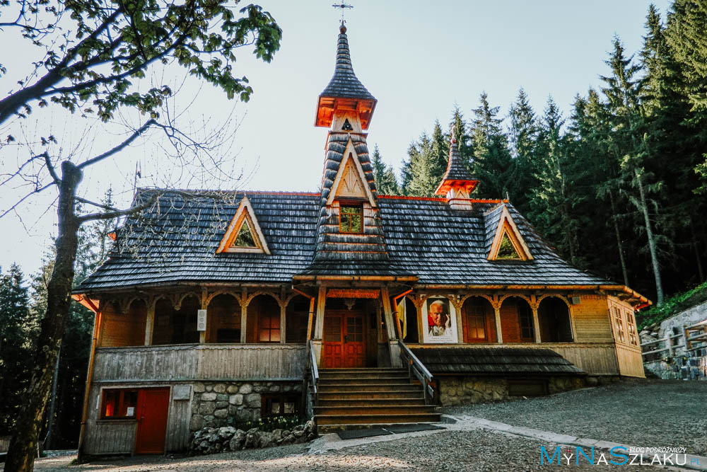

Praktyczne · W okolicy
Gdzie i o której. Najbliższy kościół jest 10 minut od willi.
Wielu naszych Gości pyta o to samo już przy zameldowaniu: o której jest msza święta i gdzie najbliżej. Odpowiedź jest krótka – najbliższy kościół to Sanktuarium św. Antoniego z Padwy u Ojców Bernardynów na Bystrem, dosłownie kilka minut spacerem od willi. Poniżej znajdziesz aktualny porządek Mszy w trzech miejscach: u Bernardynów, u salwatorianów przy Bulwarach Słowackiego (tam jest jedyna w Zakopanem niedzielna msza o 20:00) oraz na Wiktorówkach, czyli w górskim sanktuarium, do którego można wybrać się na całodniową wycieczkę połączoną z niedzielną Mszą.
To nasz parafialny kościół i zdecydowanie najwygodniejsza opcja dla Gości Willi Storczyk. Klasztor stoi na Bystrem, u stóp Nosala, przy Bulwarach Słowackiego. Bernardyni są tu od 1902 roku, a od 2020 roku kościół ma rangę sanktuarium św. Antoniego z Padwy. Miejsce jest kameralne, otoczone lasem i zupełnie inne w klimacie niż zatłoczone kościoły w centrum.
Sanktuarium św. Antoniego z Padwy – OO. Bernardyni
Bulwary Słowackiego 33, 34-501 Zakopane (wejście od ul. Karłowicza 8)
tel. 18 201 26 92
zakopane.bernardyni.pl
| Kiedy | Godziny Mszy świętych |
|---|---|
| Niedziele i święta | 7:00, 8:30, 10:00, 11:30, 17:00, 19:00 |
| Dni powszednie | 7:00, 18:00 |
| Święta pracujące | 7:00, 9:00, 18:00 |
Spowiedź jest codziennie podczas Mszy świętych i nabożeństw. Od poniedziałku do soboty o 17:20 odmawiany jest różaniec, we wtorki po Mszach o 7:00 i 18:00 odprawiane jest nabożeństwo ku czci św. Antoniego, a w środy po Mszy wieczornej – nowenna do Matki Bożej Nieustającej Pomocy.
Z Willi Storczyk schodzisz w dół Drogą na Bystre i po chwili jesteś na miejscu. To około 500 metrów, czyli 7–10 minut spokojnym spacerem. Na niedzielną Mszę o 10:00 czy 11:30 wystarczy wyjść z willi kwadrans wcześniej.
Jeśli wracasz z gór późnym popołudniem i wszystkie inne Msze już Ci uciekły, jest ratunek. W kościele rektoralnym Najświętszej Maryi Panny Królowej Świata, prowadzonym przez księży salwatorianów, w niedziele odprawiana jest Msza o 20:00. To najpóźniejsza niedzielna Msza w Zakopanem i naprawdę wygodne rozwiązanie po całym dniu na szlaku.

Kościół rektoralny NMP Królowej Świata – Salwatorianie
Bulwary Słowackiego 2, 34-500 Zakopane
tel. 575 659 414, 18 206 39 00
zakopane.sds.pl
| Kiedy | Godziny Mszy świętych |
|---|---|
| Niedziele | 7:30, 9:30, 11:00, 12:30, 18:00, 20:00 |
| Dni powszednie (X–III) | 7:30, 18:00 |
| Dni powszednie (IV–IX) | 7:00, 19:00 |
Spowiedź jest 15 minut przed każdą Mszą świętą. Można też poprosić o spowiedź na dzwonek, od poniedziałku do piątku w godzinach przedpołudniowych i popołudniowych, a w soboty przed południem.
Kościół stoi przy Bulwarach Słowackiego, po drugiej stronie miasta niż Bernardyni, w rejonie Antałówki. Z willi to około 1,4 km i mniej więcej 20 minut spacerem wzdłuż Bulwarów, albo kilka minut autobusem czy autem. Po drodze masz Krupówki, więc łatwo połączyć wieczorną Mszę ze spacerem po mieście.
To propozycja na całą niedzielę albo święto: zamiast iść do kościoła w mieście, wybierz się w góry i pójdź na Mszę na Wiktorówki. Sanktuarium Matki Bożej Jaworzyńskiej Królowej Tatr prowadzą ojcowie dominikanie. Kaplica leży na wysokości około 1200 m n.p.m., na skraju lasu tuż pod Rusinową Polaną, i jest jedynym takim miejscem w polskich Tatrach. Msza z widokiem na tatrzańskie szczyty za oknem robi wrażenie nawet na tych, którzy do kościoła chodzą rzadko.

Sanktuarium Matki Bożej Jaworzyńskiej Królowej Tatr – Wiktorówki
Wiktorówki 1, Małe Ciche, 34-531 Murzasichle
tel. 534 852 191 (pon.–sob. 9:00–18:00)
wiktorowki.dominikanie.pl
| Kiedy | Godziny Mszy świętych |
|---|---|
| Niedziele (lipiec–wrzesień) | 9:00, 11:00, 13:00, 17:00 |
| Niedziele (październik–czerwiec) | 9:00, 11:00, 13:00 |
| Dni powszednie | 12:00 |
Latem dominikanie odprawiają Msze także w schroniskach: w niedziele od lipca do września o 19:00 w schronisku w Dolinie Roztoki i o 19:00 w schronisku w Dolinie Pięciu Stawów Polskich, a w lipcu i sierpniu również o 21:00 w schronisku przy Morskim Oku. Spowiedź na Wiktorówkach jest w niedziele podczas każdej Mszy, a w dni powszednie w miarę możliwości o każdej porze.
Najkrótsze i najpopularniejsze podejście prowadzi z Zazadniej, przystanku przy Drodze Oswalda Balzera w stronę Morskiego Oka:
Alternatywnie można podejść z Palenicy Białczańskiej (parking pod Morskim Okiem) albo z Wierchu Poroniec i Małego Cichego – te warianty są dłuższe, ale też prowadzą przez Rusinową Polanę. Zejście da się poprowadzić inną drogą niż podejście, więc wycieczka nie musi być „tam i z powrotem".
Ta trasa prowadzi do parkingu, czyli tam, gdzie kończy się droga dla samochodów. Pod samo sanktuarium nie da się podjechać – dalej idzie się pieszo szlakiem. To już normalna wycieczka górska po Tatrach: podejście lasem, kamieniste ścieżki i około godziny marszu w jedną stronę. Trzeba mieć na to buty, czas i zapas sił, a nie tylko kluczyki do auta.
Sam przebieg szlaku od strony Doliny Filipka najwygodniej obejrzeć na mapie turystycznej – widać na niej profil podejścia i kolejne punkty trasy:
Szlak z Zazadniej prowadzi przez teren TPN, więc wstęp jest płatny. Bilet najlepiej kupić online, jeszcze w Zakopanem – przy samej Zazadniej zasięg bywa słaby i kupienie biletu na miejscu przez telefon potrafi się nie udać.
Jeśli celujesz w Mszę o 11:00, wyjdź z willi około 8:30 – dojazd, podejście i margines na tłok w busach w sezonie. Zabierz kurtkę przeciwdeszczową, bo pogoda na Wiktorówkach potrafi być zupełnie inna niż w mieście. Zimą i wczesną wiosną przyda się solidne obuwie, a często też raczki.
Jeśli pogoda pokrzyżuje plany, niedzielne Msze z Wiktorówek są transmitowane na żywo pod adresem wiktorowki.aztv.pl.
Godziny powyżej to stały porządek Mszy świętych, ale w okresie świąt, odpustów, rekolekcji czy Triduum Paschalnego bywają zmiany – w Boże Narodzenie, Wielkanoc, Boże Ciało czy 15 sierpnia porządek często wygląda inaczej niż w zwykłą niedzielę. Może się też zdarzyć, że parafia po prostu zmieniła godziny już po publikacji tego wpisu.
Najpewniej sprawdzić aktualny porządek bezpośrednio u źródła:
Aktualne godziny znajdziesz też w ogłoszeniach parafialnych wywieszonych przy wejściu do kościoła. A jeśli coś budzi wątpliwość – pytaj śmiało w recepcji, chętnie pomożemy i zadzwonimy sprawdzić.
Sanktuarium św. Antoniego z Padwy u Ojców Bernardynów, Bulwary Słowackiego 33 na Bystrem. Od willi około 10 minut spacerem.
W niedziele i święta o 7:00, 8:30, 10:00, 11:30, 17:00 i 19:00. W dni powszednie o 7:00 i 18:00, a w święta pracujące o 7:00, 9:00 i 18:00.
W kościele NMP Królowej Świata przy Bulwarach Słowackiego 2, u salwatorianów. Msza o 20:00 odprawiana jest w niedziele i jest najpóźniejszą niedzielną Mszą w Zakopanem.
W niedziele od lipca do września o 9:00, 11:00, 13:00 i 17:00, a od października do czerwca o 9:00, 11:00 i 13:00. W dni powszednie Msza jest o 12:00.
Busem spod dworca w kierunku Palenicy Białczańskiej do przystanku Zazadnia (około 30 minut), a stamtąd niebieskim szlakiem pod górę mniej więcej godzinę. Do Rusinowej Polany z Wiktorówek jest jeszcze 15 minut.
Tak. U Bernardynów spowiedź jest codziennie podczas Mszy i nabożeństw, u salwatorianów 15 minut przed każdą Mszą, a na Wiktorówkach w niedziele podczas każdej Mszy świętej.
📅 Artykuł powstał 16 sierpnia 2026 roku. Wszystkie godziny Mszy spisaliśmy tego dnia z oficjalnych stron parafii. Porządek nabożeństw potrafi się jednak zmienić – zwłaszcza w okresie świąt, odpustów i rekolekcji, a na Wiktorówkach dodatkowo wraz z sezonem. Zanim wyjdziesz, sprawdź proszę aktualne godziny bezpośrednio u źródła: zakopane.bernardyni.pl, zakopane.sds.pl, wiktorowki.dominikanie.pl.
Szukasz spokojnego miejsca blisko kościoła i szlaków? Zobacz pokoje w Willi Storczyk – sanktuarium na Bystrem 10 minut pieszo, przystanek autobusowy 30 m od willi i bezpłatny parking.